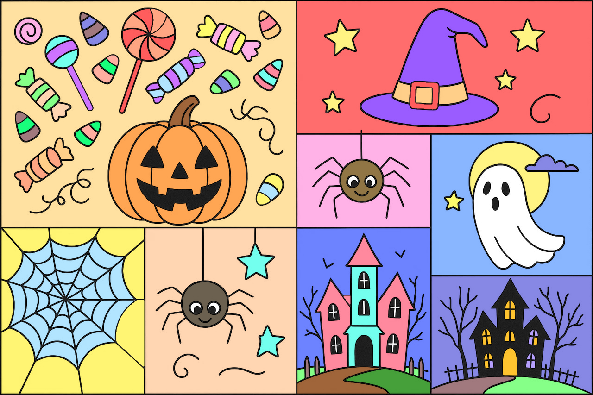
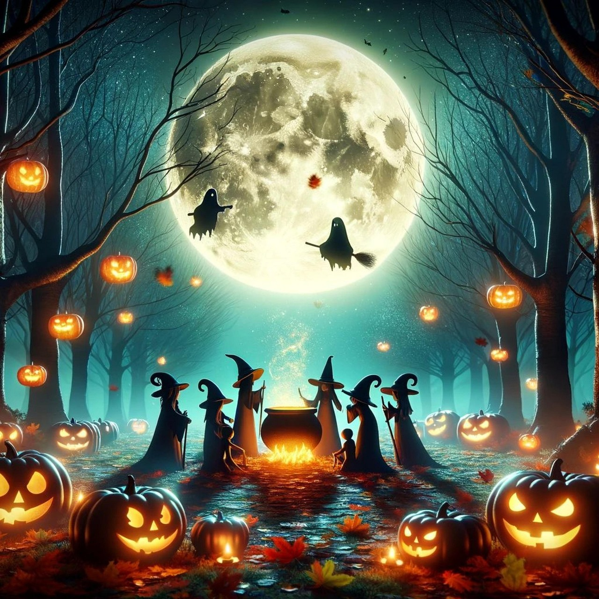
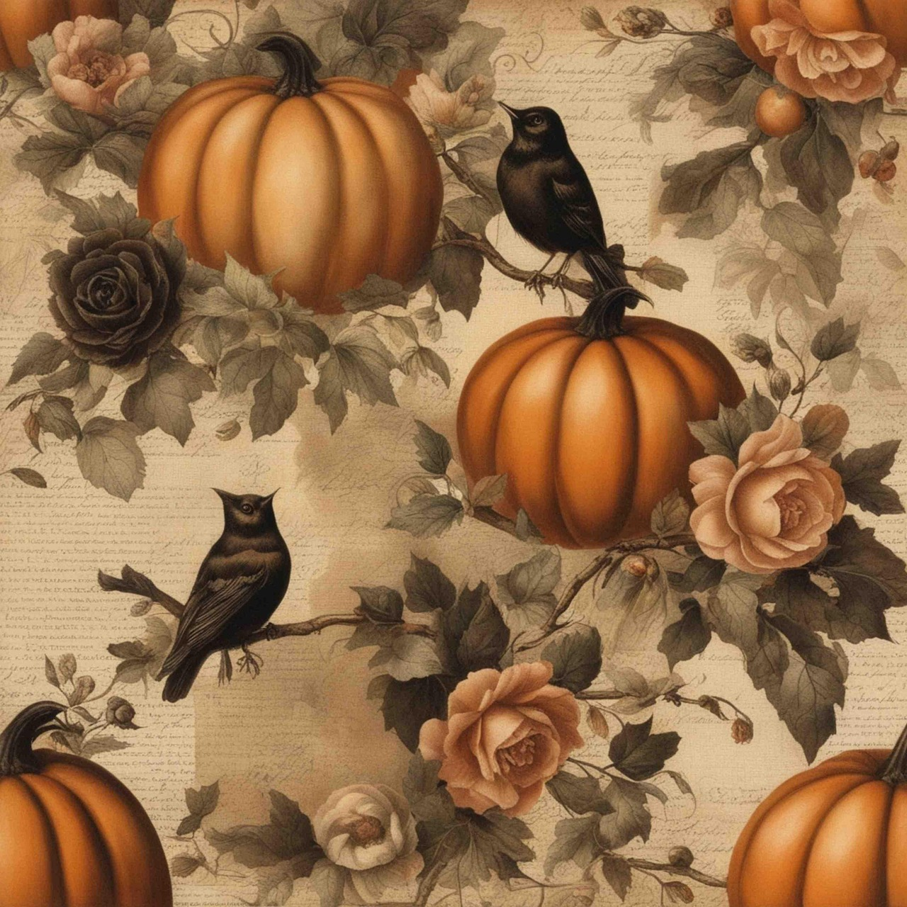
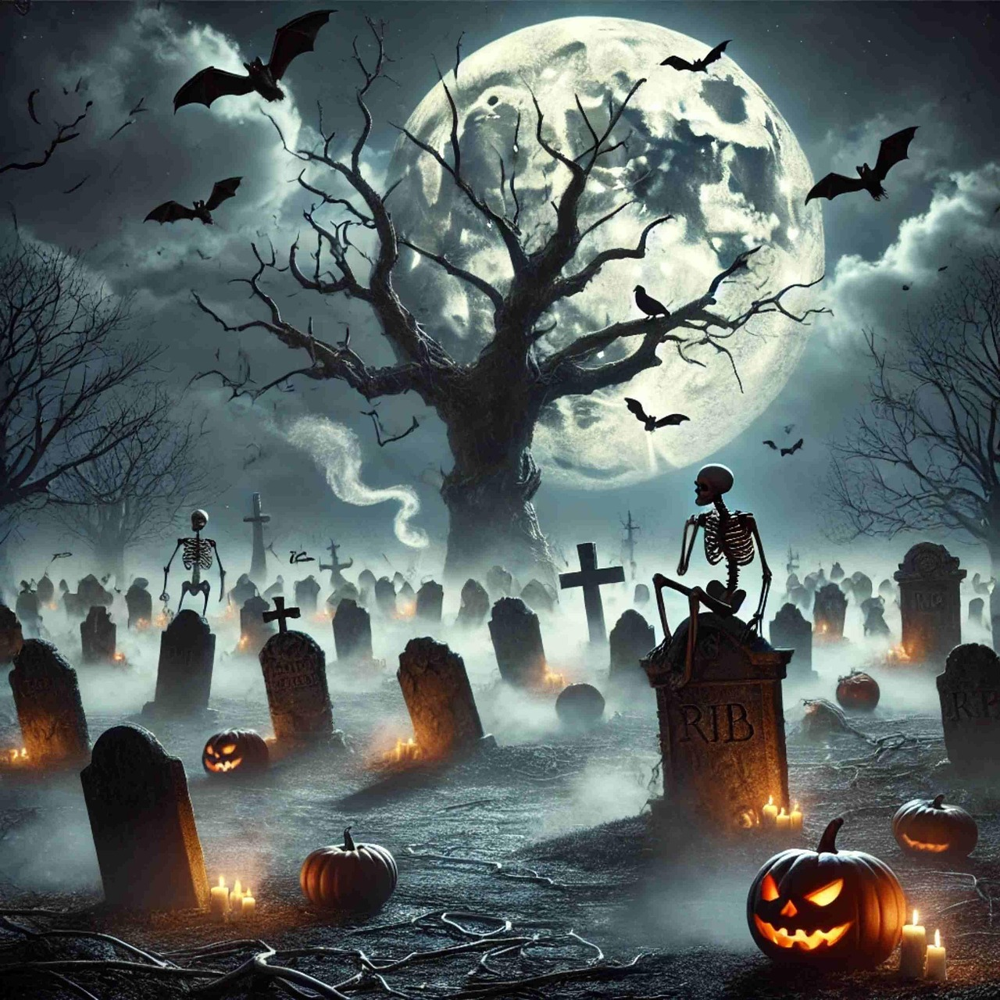
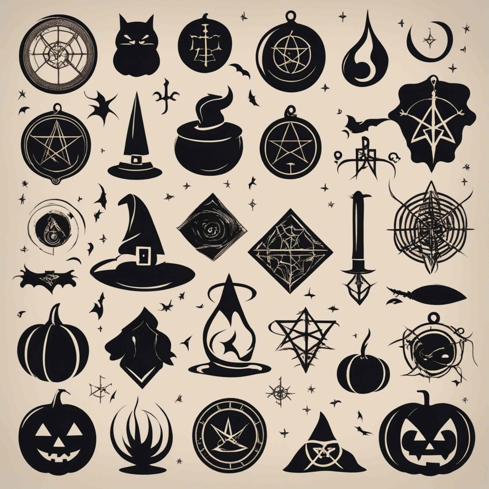

Julie Zimmi Blog



Blog 1: 10 Rare, Interesting Halloween Superstitions! Part 1
Date: June 12th, 2025
Hello, it is me, Julie, the Halloween lover, and in this first blog post, I want to talk about superstitions that are really interesting.
- Young women back then would look into mirrors, hoping to see their future husband.
- Seeing a spider on Halloween means that a deceased loved one is watching over you.
- Dogs howling on Halloween can mean that they try to summon the dead.
- If you hear an owl making sounds on Halloween, that can mean a witch is close, looking for ingredients or casting spells.
- It is believed that you should not sweep your home on Halloween night; you might sweep away the good spirits.
- Knocking 13 times on a wooden door is not advised on Halloween, since you might invite a demon.
- If a cat crosses your path from left to right on Halloween, then lucky you—money is coming your way.
- Previously, before pumpkins, people used to carve turnips on Halloween.
- Bats flying in circles three times around your home on Halloween is not a good sign; it could mean that a loved one is about to pass away.
- Wearing red, in Balkan folklore, was believed to keep vampires away.
Be excited for part 2. For now, have a good day.
Love, Julie ❤
 
Blog 2: 15 Rare, Interesting Halloween Superstitions! Part 2
Date: June 13th, 2025
Hello folks! We Halloween lovers are celebrating Summerween, it seems – so today, be ready for part 2. The superstitions continue!
- Leaving treats or bread outside your door on Halloween invites good spirits.
- Seeing a shooting star on Halloween night means you should make a wish; before the end of the year, it will come true.
- If you want to see a witch at midnight on Halloween, put your clothes on inside out and walk backwards.
- If you notice the candle flame turning blue, it means a ghost is near.
- You might get an unexpected visitor, if a broom falls over on Halloween night.
- If you place a stone on a grave on Halloween that keeps the spirit at rest.
- A spirit talks about you, if your ears ring.
- If you want to dream of your future spouse, then put a silver coin under your pillow.
- If you’re born on Halloween, you might have second sight and are able to see and talk to spirits.
- Burn rosemary on Halloween to cleanse your home and protect it from spirits.
- It is a blessing from the other side if it rains on Halloween.
- Centuries ago, the Irish would hide charms like a ring or coin in meals; whoever finds the ring will marry.
- Hold your breath when passing near a graveyard or else a spirit might enter your body.
- Placing a candle in the window is said to help lost souls find their way back home on Halloween night.
- Cover your mirror to make sure no spirit can enter our realm.
 
That's all for now. Have a good day or night spooky souls.
Greetings,
Julie 🎃